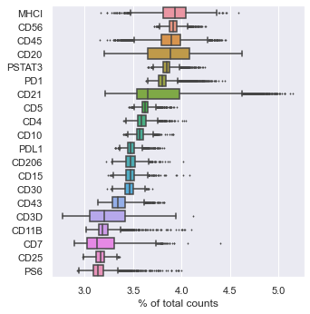
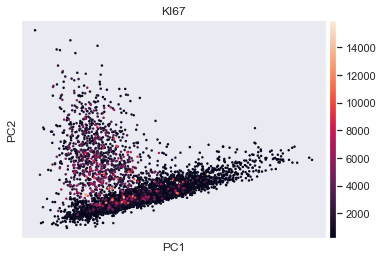
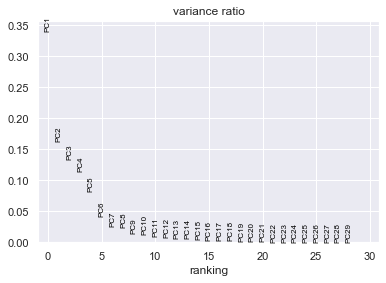

Getting Started with Scimap
#!/usr/bin/env python3
# -*- coding: utf-8 -*-
"""
Created on Fri Jun 26 23:11:32 2020
@author: Ajit Johnson Nirmal
Scimap Getting Started tutorial
"""
'\nCreated on Fri Jun 26 23:11:32 2020\n@author: Ajit Johnson Nirmal\nScimap Getting Started tutorial\n'
# Before you start make sure you have installed the following packages
# pip install scimap
# pip install scanpy
# pip install leidenalg
# pip install PyQt5
Tutorial material
You can download the material for this tutorial from the following link: here:
Tutorial video
from IPython.display import HTML
HTML ( '<iframe width="450" height="250" src="https://www.youtube.com/embed/knh5elRksUk" frameborder="0" allow="accelerometer; autoplay; encrypted-media; gyroscope; picture-in-picture" allowfullscreen></iframe>' )
VIDEO
# Load necessary libraries
import sys
import os
import anndata as ad
import pandas as pd
import scanpy as sc
import seaborn as sns ; sns . set ( color_codes = True )
# Import Scimap
import scimap as sm
# Set the working directory
os . chdir ( "/Users/aj/Desktop/scimap_tutorial/" )
Load data using AnnData
# Load data
data = pd . read_csv ( 'counts_table.csv' ) # Counts matrix
meta = pd . read_csv ( 'meta_data.csv' ) # Meta data like x and y coordinates
# combine the data and metadata file to generate the AnnData object
adata = ad . AnnData ( data )
adata . obs = meta
Print adata to check for it's content
AnnData object with n_obs × n_vars = 4825 × 48
obs : 'X_centroid' , 'Y_centroid' , 'Area' , 'MajorAxisLength' , 'MinorAxisLength' , 'Eccentricity' , 'Solidity' , 'Extent' , 'Orientation'
adata . obs # prints the meta data
X_centroid
Y_centroid
Area
MajorAxisLength
MinorAxisLength
Eccentricity
Solidity
Extent
Orientation
0
511.555556
9.846154
117
14.532270
10.273628
0.707261
0.959016
0.750000
-0.695369
1
579.330097
9.398058
103
16.056286
8.776323
0.837396
0.903509
0.613095
1.115707
2
630.958333
12.883333
120
15.222005
10.310756
0.735653
0.975610
0.681818
0.151616
3
745.194631
16.275168
149
14.380200
13.404759
0.362027
0.967532
0.662222
-0.270451
4
657.173653
18.035928
167
17.675831
12.110106
0.728428
0.943503
0.695833
-0.810890
...
...
...
...
...
...
...
...
...
...
4820
559.597403
1091.577922
154
18.150307
11.683288
0.765281
0.900585
0.570370
-0.342315
4821
619.983871
1092.959677
248
21.734414
15.565820
0.697912
0.864111
0.551111
1.432242
4822
583.317073
1093.573171
82
12.060039
9.539789
0.611784
0.964706
0.630769
0.203023
4823
607.064394
1101.583333
264
22.549494
15.905321
0.708858
0.882943
0.661654
0.691838
4824
641.592486
1100.132948
346
23.149806
19.375564
0.547257
0.945355
0.791762
-1.390516
4825 rows × 9 columns
adata . X # prints the counts table
array ([[ 16640.564 , 719.6325 , 527.7094 , ... , 1085.735 ,
218.54701 , 3170.47 ],
[ 16938.3 , 686.5534 , 469.30096 , ... , 1075.6407 ,
164.48544 , 3116.767 ],
[ 16243.542 , 819.4167 , 604.39166 , ... , 1164.3917 ,
227.74167 , 3156.1084 ],
... ,
[ 28656.256 , 878.2561 , 585.3293 , ... , 1233.183 ,
1243.5488 , 3194.195 ],
[ 22054.818 , 685.8485 , 424.85226 , ... , 1031.2424 ,
313.32574 , 3038.8105 ],
[ 23992.854 , 850.25146 , 529.89886 , ... , 1000.5578 ,
285.98267 , 3087.3005 ]], dtype = float32 )
adata . var [ 0 : 5 ] # prints the first 5 channel or marker names
You would have noticed that
- the data is not in log scale
- All the DNA channels are there
- The background channels are there
If we diretly perform clustering or any other type of analysis, the above mentioned factors may affect the results and so it is recommended to remove them.
Load data using scimap's helper function
Use this if the single-cell data was generated using mcmicro pipeline . With this function though many of the above limitations can be imediately addressed. By default it removes DNA channels and you can pass any channel name into drop_markers parameter inorder to not import them.
image_path = [ '/Users/aj/Desktop/scimap_tutorial/mcmicro_output.csv' ]
adata = sm . pp . mcmicro_to_scimap ( image_path , drop_markers = [ "PERK" , "NOS2" , "BG1" , "BG2" , "BG3" , "ACTIN" ])
Loading mcmicro_output.csv
Check adata contents now as we did previously
AnnData object with n_obs × n_vars = 4825 × 30
obs : 'X_centroid' , 'Y_centroid' , 'Area' , 'MajorAxisLength' , 'MinorAxisLength' , 'Eccentricity' , 'Solidity' , 'Extent' , 'Orientation' , 'imageid'
uns : 'all_markers'
adata . X # Will now contain log normalized data
array ([[ 6.3674684 , 6.4287267 , 7.3826084 , ... , 6.990933 , 5.3915663 ,
8.061951 ],
[ 6.340171 , 6.094227 , 7.339796 , ... , 6.981601 , 5.1088834 ,
8.044872 ],
[ 6.503502 , 6.3549495 , 7.4734573 , ... , 7.0608125 , 5.4325933 ,
8.057412 ],
... ,
[ 6.5583014 , 6.660794 , 7.4199724 , ... , 7.1181645 , 7.1265283 ,
8.069404 ],
[ 6.3370404 , 6.281594 , 7.2397914 , ... , 6.939489 , 5.7504296 ,
8.01955 ],
[ 6.3805585 , 6.180567 , 7.2547846 , ... , 6.909312 , 5.659422 ,
8.035377 ]], dtype = float32 )
adata . raw . X # contains the raw data
array ([[ 581.5812 , 618.38464 , 1606.7778 , ... , 1085.735 , 218.54701 ,
3170.47 ],
[ 565.8932 , 442.29126 , 1539.3981 , ... , 1075.6407 , 164.48544 ,
3116.767 ],
[ 666.475 , 574.3333 , 1759.6833 , ... , 1164.3917 , 227.74167 ,
3156.1084 ],
... ,
[ 704.0732 , 780.1707 , 1667.9878 , ... , 1233.183 , 1243.5488 ,
3194.195 ],
[ 564.1212 , 533.64014 , 1392.803 , ... , 1031.2424 , 313.32574 ,
3038.8105 ],
[ 589.2572 , 482.2659 , 1413.8584 , ... , 1000.5578 , 285.98267 ,
3087.3005 ]], dtype = float32 )
adata . obs # prints the meta data
X_centroid
Y_centroid
Area
MajorAxisLength
MinorAxisLength
Eccentricity
Solidity
Extent
Orientation
imageid
mcmicro_output_1
511.555556
9.846154
117
14.532270
10.273628
0.707261
0.959016
0.750000
-0.695369
mcmicro_output
mcmicro_output_2
579.330097
9.398058
103
16.056286
8.776323
0.837396
0.903509
0.613095
1.115707
mcmicro_output
mcmicro_output_3
630.958333
12.883333
120
15.222005
10.310756
0.735653
0.975610
0.681818
0.151616
mcmicro_output
mcmicro_output_4
745.194631
16.275168
149
14.380200
13.404759
0.362027
0.967532
0.662222
-0.270451
mcmicro_output
mcmicro_output_5
657.173653
18.035928
167
17.675831
12.110106
0.728428
0.943503
0.695833
-0.810890
mcmicro_output
...
...
...
...
...
...
...
...
...
...
...
mcmicro_output_4821
559.597403
1091.577922
154
18.150307
11.683288
0.765281
0.900585
0.570370
-0.342315
mcmicro_output
mcmicro_output_4822
619.983871
1092.959677
248
21.734414
15.565820
0.697912
0.864111
0.551111
1.432242
mcmicro_output
mcmicro_output_4823
583.317073
1093.573171
82
12.060039
9.539789
0.611784
0.964706
0.630769
0.203023
mcmicro_output
mcmicro_output_4824
607.064394
1101.583333
264
22.549494
15.905321
0.708858
0.882943
0.661654
0.691838
mcmicro_output
mcmicro_output_4825
641.592486
1100.132948
346
23.149806
19.375564
0.547257
0.945355
0.791762
-1.390516
mcmicro_output
4825 rows × 10 columns
We can use scanpy package to explore the data
sc . pl . highest_expr_genes ( adata , n_top = 20 , ) # Most expressing proteins

sc . tl . pca ( adata , svd_solver = 'arpack' ) # peform PCA
sc . pl . pca ( adata , color = 'KI67' ) # scatter plot in the PCA coordinates

sc . pl . pca_variance_ratio ( adata ) # PCs to the total variance in the data

# Save the results
adata . write ( 'tutorial_data.h5ad' )
This concludes the getting started tutorial, continue with the phenotyping tutorial.